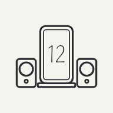

Still Here について眠っている古いスマホを、置きっぱなしの時計・雨予報・ラジオにするアプリです。無料で、登録もいりません。
位置情報とプライバシー
雨予報と日の出・日の入りを出すためだけに、位置情報を使います。
| どれくらい | 小数点以下2桁に丸めてから使います。約1km四方の精度で、住所や建物は分かりません。 |
|---|---|
| 送り先 | 天気予報サービスの Open-Meteo だけです。 |
| 保存 | 位置そのものは保存しません。取ってきた予報と選んだラジオ局は、お使いの端末のブラウザの中にだけ保存します。 |
| 作者には | 届きません。このアプリには作者のサーバーがなく、アクセス解析や Cookie も使っていません。 |
位置情報を使わなくても、時計とラジオはそのまま使えます。最初に「使わない」を選んだ場合は、雨予報の欄を押すと、もう一度選べます。
インターネットの仕組み上、ページを開いた時は GitHub（このページの置き場所）に、雨予報を取る時は Open-Meteo に、ラジオを聴く時は各放送局に、お使いの回線の IP アドレスが伝わります。それぞれの扱いは各社の方針によります。
データの出典
- 雨予報・日の出と日の入り: Open-Meteo（CC BY 4.0）
- 文字: Shippori Mincho（SIL Open Font License）。時刻の数字は自作の手書き風の数字です。
ラジオ局
世界中のネットラジオ局を探し、高音質（256kbps以上）で配信していることを条件に絞り込んで、その中からジャンルが重ならないよう9局を選びました。アメリカ・イギリス・オランダ・ポーランド・セントルシアの局です。
各放送局がインターネットで公開している放送を、お使いの端末から直接再生しています（このアプリは音声を中継していません）。ボタンの名前と放送局は次のとおりです。
| Ambient-Chillout | Groove Salad（SomaFM） MP3 256kbps |
|---|---|
| Classic-Rock | Left Coast 70s（SomaFM） MP3 320kbps |
| Classic-Vinyl | WALM Classic Vinyl HD（WALM） MP3 320kbps |
| Pop-Europe | PureClassix Radio MP3 320kbps |
| Smooth-Jazz 1 | SmoothJazz.com.pl MP3 320kbps |
| Smooth-Jazz 2 | RelaxingJazz.com MP3 320kbps |
| Meditation | SmoothLounge.com（SmoothJazz.com） MP3 256kbps |
| Bossa-Nova | Bossa Beyond（SomaFM） MP3 256kbps |
| Classical-Audiophile | Naim Classical（Naim） AAC 320kbps |
放送局の都合で、放送が止まったり、つながらなくなったりすることがあります。SomaFM などは聴く人の寄付で運営されています。気に入った局があれば、各局のサイトもご覧ください。
ご利用上の注意
- 充電しっぱなしについて: 古いスマホを長いあいだ充電器につないだままにすると、電池がふくらむことがあります。ふくらみや熱に気をつけ、布団や燃えやすい物の上には置かないでください。iPhone は「設定 → バッテリー → バッテリーの状態と充電」で「バッテリー充電の最適化」をオンにしてください。
- 古い端末について: 古い OS にはセキュリティの更新が届きません。このアプリは個人情報を扱いませんが、その端末ではアカウントへのログインや買い物をせず、置き時計専用にするのがおすすめです。
- 雨予報は目安です: 降り始め・止む時刻は予報からの目安です。防災の判断には、気象庁などの情報をご確認ください。
- 画面の点けっぱなし: 端末の「自動ロック」を「なし」にすると、画面が消えずに使えます。焼き付きを防ぐため、表示は1時間ごとに少しずつ位置を変えています。
ホーム画面に追加
- iPhone: Safari で開き、共有ボタン（□に↑）→「ホーム画面に追加」
- Android: Chrome で開き、右上の︙ →「ホーム画面に追加」（または「アプリをインストール」）
LINE や Facebook のアプリの中で開いた時は追加できません。Safari や Chrome で開き直してください。